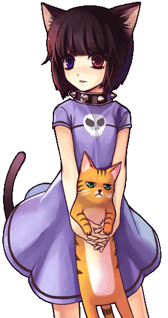

画像にリンクがはってあるものは、クリックすると別窓で大きめサイズが表示されます。
シャルル=オルレアン （料理クエ・プロンテラ城内） | シャルル=オルレアン （料理クエ・プロンテラ城内） |

| |
シャルル=オルレアン （料理クエ・プロンテラ城内） | シャルル=オルレアン （料理クエ・プロンテラ城内） |

| |
シャルル=オルレアン （料理クエ・プロンテラ城内） | シャルル=オルレアン （料理クエ・プロンテラ城内） |
| orleans_7.bmp シャルル=オルレアン （料理クエ・プロンテラ城内） |
|  | |
（料理クエ・プロンテラ城内） | （料理クエ・プロンテラ城内） |

| |
（料理クエ・プロンテラ城内） | （料理クエ・プロンテラ城内） |
back
(c) Gravity Co., Ltd. & Lee MyoungJin(studio DTDS). All rights reserved.
(c) GungHo Online Entertainment, Inc. All Rights Reserved.
当コンテンツの再利用（再転載・配布など）は、禁止しています。